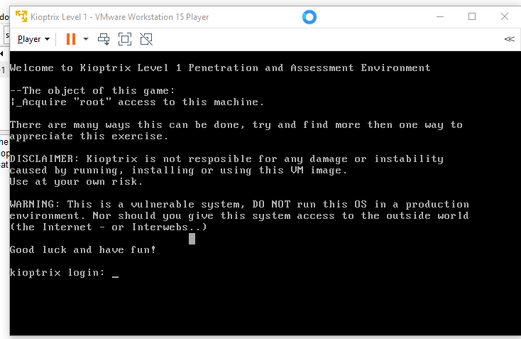

go on vulnub and see the machines
wwe downloaded the kioptrix level 1
chnged the setting to nat instead of bridged in the actual fiolder opened a file called virtual machine conifguration with notepad changed bridged there to nat

aisa aaya